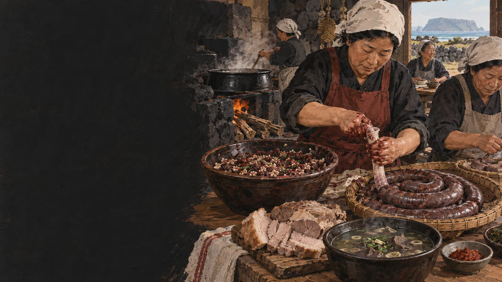

수애
제주어 생활명은 음식과 잔치의 기억을 함께 품습니다.
 제주에서는 이 재료를
제주에서는 이 재료를
제주 음식의 생활문화를 바탕으로 제작한 기록화 · 생성 이미지
수애는 순대를 가리키는 제주어입니다. 잔칫날 잡은 돼지의 창자에 피와 보리, 메밀가루 등 곡물을 넣어 삶아 돼지 한 마리를 남김없이 나누었습니다.
오늘 흔한 당면순대와 달리 피의 진한 맛과 곡물의 고소함, 단단하고 촉촉한 질감이 중심입니다. 재료 비율과 향신 채소는 마을과 집마다 달랐습니다.
피를 받아 속을 만들고 창자에 채워 삶아 나누는 공동 작업을 따라갑니다.
잔치 공동 작업에서 부위와 부산물을 나눕니다.
여러 번 씻고 뒤집어 깨끗이 준비합니다.
피에 보리·메밀 등 곡물과 채소를 섞습니다.
터지지 않도록 여유 있게 넣고 묶습니다.
익혀 썬 뒤 잔칫상 여러 음식과 나눕니다.
피와 곡물, 돼지 창자가 귀한 재료를 남김없이 쓰는 방식으로 만납니다.
제주어 생활명은 음식과 잔치의 기억을 함께 품습니다.
당면보다 제주 밭곡물과 신선한 피의 결합이 중요했습니다.
같은 돼지에서 나온 음식들이 한 잔칫상에 모입니다.
유명한 메뉴보다 왜 이런 재료와 방식이 제주 생활에 필요했는지를 먼저 묻습니다.
속 재료와 맛, 만드는 장소와 먹는 상황을 기준으로 두 음식을 구분합니다.
피·보리·메밀 등
당면·채소·찹쌀 등
돼지를 잡는 잔칫날
전문 생산·상시 판매
진한 피맛, 곡물의 고소함
부드럽고 탄력 있는 당면
삶아 빠르게 나눔
냉장·유통 체계에 맞춤
수애는 돼지의 부산물을 처리하는 음식이면서 공동체가 일과 고기를 나누는 방식이었습니다. 몸국·돔베고기와 함께 볼 때 구조가 선명해집니다.
현대 식당의 수애는 위생 설비와 냉장 유통에 맞춰 재료와 크기가 달라질 수 있습니다.
수애 한 점에는 창자를 씻고 속을 섞고 솥을 지킨 여러 사람의 일이 들어 있습니다.
피와 내장을 쓰는 음식은 도축·세척·가열·냉장 관리가 핵심입니다. 가정 재현보다 위생 관리가 확인된 생산·조리처를 이용합니다.
공공기관·연구기관의 원문을 우선했습니다. 링크와 문서 내용은 2026년 9월 확인했습니다.